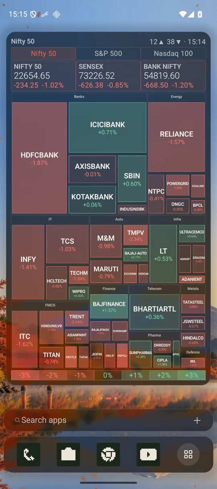
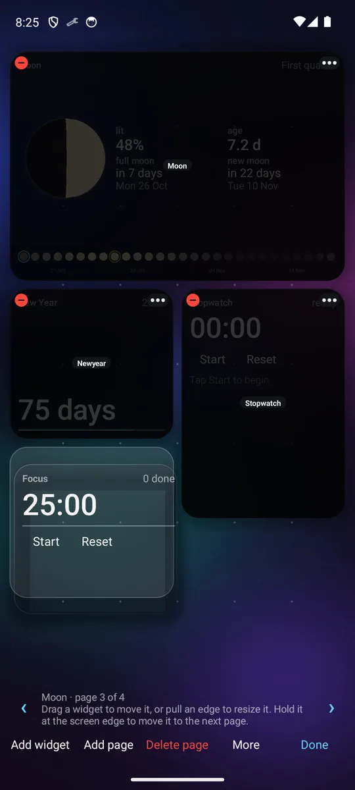
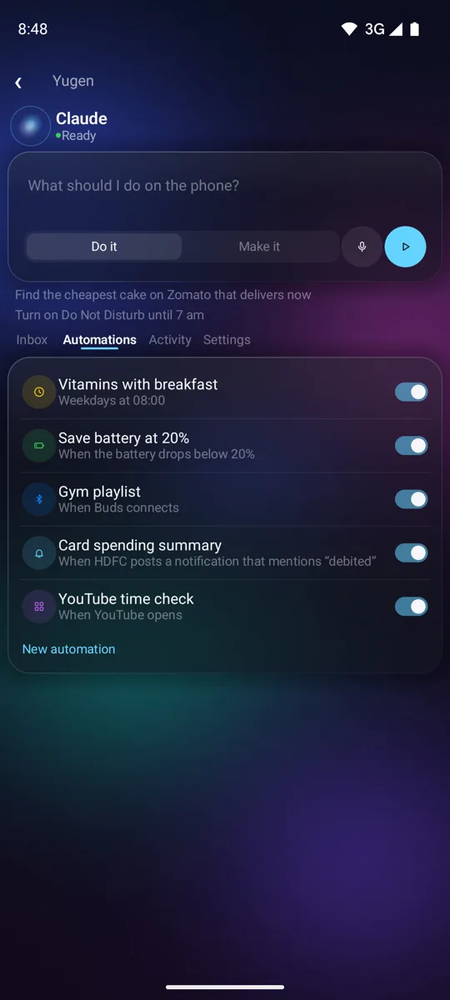

1Ask
One sentence, one widget
Claude Code made these on a phone from the request written under each one. The market heatmap comes with Yugen.
Tap any screen to see it full size.
Make a widget that counts the glasses of water I drink todayA counter with a goal of eight glasses that starts again each day.
Make a stopwatch widget with lap timesIt sits beside a New Year countdown and a focus timer, each made from its own request.

Switch the theme to CyberpunkEvery widget restyles at once, down to the dock.
When you would rather move things yourself, your fingers work too.

2Arrange
Arrange it with your fingers
Hold anywhere on the home screen and it turns into an editor.
- Drag and resizeA drop shape shows where a widget will land, and pulling an edge makes it larger.
- Apps from the drawerHold an app and carry it onto any page, or into a widget.
- Reminders that ringThey sound like an alarm, with Snooze and Dismiss, and automations run on time, battery, Wi-Fi and notifications.
In Yugen Plus, the agent can also work in your other apps.
3Hand it over
Yugen PlusThe agent uses your phone for you
Ask for something done in your other apps. The agent opens them, reads the screen and taps through each step while a card shows what it is doing, with a Stop button, and it asks you before anything that sends, pays or deletes.
- Phone tasks
Set an alarm for 6:30 called Gym.
Text Riya that I’m running late.
Find the cheapest cake on Zomato that delivers now.
- Make something new
- One sentence becomes a widget, an automation or a theme, and it waits in your inbox until you approve it.
- Smarter automations
- They can start when you open an app, and they can ask the agent, such as adding a bank alert to your spending notes.
- Suggestions, voice and memory
- The agent suggests widgets from how you use your phone, takes spoken tasks, and remembers what you told it.

Start with Yugen for free, and move to Plus when you want the agent to do more.
4Choose
Two editions
Yugen
Free
- Widgets, pages and themes your agent builds
- Editing by touch, and apps dragged from the drawer
- Reminders and automations
Yugen Plus
Paid
- Everything in Yugen
- Phone tasks in your other apps, with a Stop button
- Make something new, with an inbox to approve it
- Automations that start when an app opens or ask the agent
- Suggestions, voice input and memory
Both run the agent in a small Linux system inside the app, which downloads about 130 MB when you choose to set it up. Each agent needs your own account with its provider.